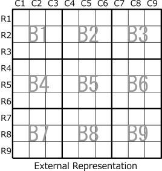
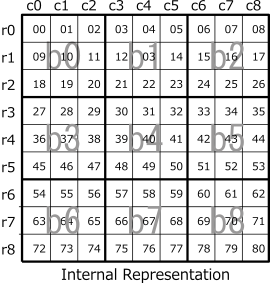

Board surface / Cell / Candidate digit
In GNPX, we use two expressions of external representation and internal representation.
The external representation is for the user interface, 1 to 9 rows (r1 to r9),
1 to 9 columns (c1 to c9) of the board surface, 1 to 9 blocks (b1 to b9) It is defined as.
The internal representation is a notation used for programming, with 0 to 8 rows (r0 to r8 ),
vertical 0 to 8 columns (c0 to c8), 0 block to 8 blocks (b0 to b8).
Also, each cell is represented by a serial digit from the upper left to the lower right (internal representation only).
In the explanation of the Sudoku algorithm, all internal representation is used,
and the external representation is used only for the part showing the analysis result to the user.
Internal and external representations are same form, but can be distinguished in context.


Use "cell r2c3" for cell position or "r2c3" format with cells omitted.
Multiple cell positions are denoted as "r2c3 r2c4 r2c8", but they may be collectively referred to as "r2c348".
It is an abbreviation and also expresses that it is "c3, c4, c8 in row r2".
For short, "r23c45", "r12345c2", "b23" etc. are also used.
Since the representation of cell groups is not unique, please understand these flexibly.
Candidate digits are indicated with a # at the beginning.
For example, when candidate digits of a cell are 1, 5, and 7, it is expressed as "#157".
When the candidate digit is 3 or 5, it is represented by #(35) in parentheses.
If the candidate digits are 1 and 2 and (35), it is expressed as #12(35).
The form of #(19)(78) is used in the description of SueDeCoq Algorithm.
House
Sudoku's rule is that
"one row, one column, one block does not contain the same digit but only enters one place".
It can be thought of as the same constraint condition, not as row, column, or block.
In GNPX, this restriction is digited from 0 to 26.
In GNPX, this restriction is digited from 0 to 26. We call these "houses".
- House 0-8 : Restrictions on Row 0 to 8.
- House 9-17 : Restrictions on Column 0 to 8.
- House 18-26 : Restrictions on Block 0 to 8.